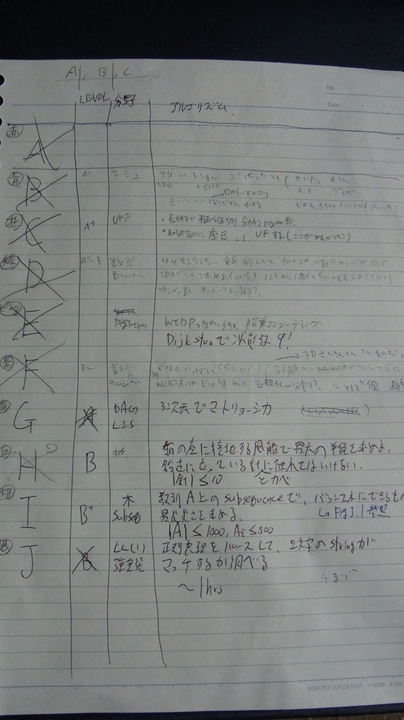

ICPC2013 会津大会参加記
ICPC2013 会津大会に、東工大からチームbinding.pryとして参加した。 東工大からはもう1チーム、FCCPC_alphaが出ていた。
チームメンバー
- @osa_k
- @tokoharu_sakura
- @mikecat_mixc
チーム戦略
- とこはるさんはアルゴリズムを考え続ける。
- 他の2人は解けている問題を順次実装していく。
- 待ち時間は独立に問題を考えるか、とこはるさんとペアで考えるか、適宜選ぶ。
- 日本大会はA, Bあたりはやるだけなので、解法を思いついたら即書く。
- それ以外の問題はとこはるさんにverifyを取る。
- 読んだ問題はジャンルと難易度評価、簡単な説明を紙にまとめる（UECodersやuwiさんのまね）。
注
- 時刻は記憶と、スコアボードにある提出時刻からの逆算。
- AC(nAC, +hh:mm)表記は、通算AC数と前回ACからの経過時間。
00:00
開始。とりあえず設定ファイルを書き写す。
00:05
A問題を読む。与えられた数sを、k個以下の異なる数の和で表す問題らしい。 集合列挙なので即座にメモ化再帰で書き始める。
00:10
バグる。なんかINT_MAXみたいな値が出てくる。
00:15
よく見たらsが0より小さくなった時の処理を書き忘れていた。 直してAC(1AC, +00:10)。
Bが解けているらしいのでmikecatさんにチェンジ。 とこはるさんからCの説明を聞く。
矩形を50個くらい重ねたとき、その枠で区切られる領域の個数を数える問題。 座標圧縮した上でグリッドグラフとして扱い、区切りがあるかないかでUnion Findすればいいんじゃないかととこはるさんに提案される。受理する。
00:25
なんかBがバグっているらしい。 とこはるさんにEの説明も聞く。移動が特殊な9パズルらしい。 状態数が9!しかないのでナイーブなDijkstraだ！という旨を伝える。
とりあえず問題を読み進める。 Gは3次元空間に散らばった点を左下から右上に向けてたどっていったとき、最長でいくつの点を通れるかという問題。 よくあるマトリョーシカのやつを3次元に拡張したものなので簡単なのでは？ ととこはるさんに主張する。あまり良い反応を得られない。
00:42
Bが通った(2AC, +00:27)のでCを書き始める。
01:10
バグる。簡単のため座標を2倍化して壁も1マスを専有するようにしたのだが、デバッグ出力してみると変なところに壁が置かれている。 やばそうなのでmikecatさんにスイッチする。いもす法でできると主張していたので任せる。
Hを読む。 上が空いている箱の中に針が置いてあって、壁や針に触れないようにして風船を置く問題。 下端が地面に接していないという制約があるので普通に解けそう。
ちょっと考えて、風船の半径で二分探索すればよいことに気づく。 壁に触れてはいけない制約から球の中心が置ける範囲の矩形が求まり、床に触れる制約から高さが定まる。 あとは針に触れない制約を満たす領域が矩形内にあればよい。 すなわち、矩形が円の集合でカバーされているかどうか判定できればよい。 とこはるさんに話してなんとなくOKをもらう。
Jを読む。 グリッド内の各行、各列に正規表現が割り当てられていて、すべての正規表現がマッチするようにグリッド内に文字を置く問題。 グリッドが2×2固定だと勘違いして、構文解析してオートマトンを作れば文字列は全探索して終わりだと思って、1時間半くらいで実装できると判定する。
01:40
mikecatさんが最後のサンプルだけ合わないと言う。 とこはるさんが確認して、このケースはmikecatさんのアルゴリズムでは解けないことがわかる。 やばそうなので再チェンジ。
01:52
さっき書いたコードを別の方法で書き換えたらバグが取れた。 Union Findじゃなくて普通にBFSで色塗ればいいんじゃね？ということにも気づいたのでそうする。 サンプルが通ったので投げる。AC(3AC, +01:10)。
このへんで出遅れすぎてて死ぬかと思ったが、周りを見ると意外と4完以上しているチームが少ない。
Cを修正している間にmikecatさんととこはるさんがDの方針を立てていた。 Eも簡単なことが分かっているので、確実に20分で書けると主張する。 Dは方針が詰め切れていなかったとのことで、Eを書くことに決まる。
02:00
状態をvectorで直接管理するナイーブなDijkstraを書く。 なんかサンプルが-1（到達不能）を吐きまくる。なんだこれは。
02:08
全体を一斉に置換するのだと思っていたが、問題をよく読むと、普通のスライドパズルっぽく空白にしかコマを動かせないらしい。 問題文はよく読みましょう。
そういう風に修正したらサンプルが通ったので投げる。AC(4AC, +00:16)。
2013/11/27 00:08 追記 問題文にはマス目の接続関係が表の形で書いてあって、一見すると全てのマス目をどのように置換するかの表にも見えた。
2013/11/27 00:08 追記 とこはるさん曰く、伝達がうまく行っていなかったのも原因。ただ、スライドパズルと聞いた記憶はあるので、全体を置換すると勝手に思い込んで確認しなかったのは問題である。
Dの方針も詰め切れたらしいのでmikecatさんにスイッチ。 Hの方針を考える。
02:20
円の集合が矩形をカバーしているかは、円と円、円と線分、線分と線分すべての交点を列挙し、矩形内にある交点がどれかの円に真に含まれているかを見ればよいのではないかと思いつく。 確証は持てていなかったが、とこはるさんに話すと証明を与えてくれた。 とこはるさんは分割統治で解けるとも主張していたが、細部を忘れていたのと、あまり理解できなかったので最初の方針で行くことにする。
Hが解けたのでJのコードを考える。 が、制約をよく読むと最大で4×4のグリッドがくるらしい。これはやばい。 Dはまだかかりそうなので、トイレがてら休憩室に行く。
02:30
休憩室でアップルパイを食べながらJを考え、正規表現から受理される文字列を生成できれば候補の絞り込みに使えるなぁ、そういうのkinabaさんか誰かがずっと前に話してたなぁと思いつつ、どうしようもないという結論に達する。
02:46
Hを紙コーディングしていたらDが終わったらしく、投げてからStandingsを見る。 FCCPC_alphaが先に5完していて危機感を覚える。
そうこうしているうちにDが無事に通った(5AC, +00:28)ので、Hのコーディングを始める。
03:10
Hを書き終えたのでサンプルを食わせる。正しい値が出ない。 交点の座標を列挙すると、えらく巨大な座標が出てくる。
矩形外の交点を除外するのを忘れていた。直しても合わない。
矩形の辺長が0より小さくなることがあった。直しても合わない。
EPSを変えたり、不等号の等号をつけたり消したりする。合わない。
03:35
コードを印刷してmikecatさんに渡すと、入力のパラメータの解釈を間違えていることを指摘された。 Wは箱の大きさだと思っていたが、箱の壁の高さらしい。 問題文はちゃんと読みましょう（再）。
直したらサンプルが合う。投げてAC(6AC, +00:49)。
03:40
Standingsを確認すると、どうやらFCCPC_alphaには勝っている模様。
2013/11/27 00:04 ログから順位表を正しそうな感じに修正
| 順位 | Solved | チーム名 |
| 1 | 9 | TwT514 (NTU) |
| 2 | 8 | 0perasan (U Tokyo) |
| 3 | 7 | Old Pucks (Tsing) |
| 4 | 7 | wakaba (U Tokyo) |
| 5 | 6 | Secret; Weapon (SJTU) |
| 6 | 6 | binding.pry (Titech) |
| 7 | 5 | negainoido (U Tokyo) |
その上には東大と中国ばっかだが、SJTUというのが台湾か中国かわからないし1、FCCPC_alphaが更に解くことも考えるとスロットは危うい。確実に1問は通す必要がある。
Jは無理として、残っているF、G、Iのうちどれが解けそうか相談する。 Iは0perasanが60分で解いているが、いかにもりんごさんが得意そうな問題なので当てにならない。 Gはこの時点で海外チームしか通しておらず、データ構造を知らないと解けない問題に違いない、ととこはるさんが主張するので、Fを解くことにした。
Fはだいたいランダムな3次元ベクトルが10^4本オーダーで与えられるので、なす角が一番小さい組（複数ある場合は辞書順最小）を求める問題。 とりあえず正規化すると球面上の最近点対問題に落ちて、これは3次元空間の最近点対問題と同じなので、蟻本に載っている2次元のものを拡張すればできそう。 とこはるさんとmikecatさんがアルゴリズムを考えている間、3次元ベクトルを扱うためのコードを書く。
04:10
とこはるさんがアルゴリズムができたと言う。同じくらいに3次元ベクトルのコードも書き終わる。 とこはるさんが蟻本のコードを見せながら、ここはこう書いてくださいと逐次指示してくるので、よくわからないまま言われた通りに書く。
04:30
コードが完成する。 サンプルを食わせると、距離は合っているっぽいが辞書順最小でないものが出力される。 誤差かなんかで同じ距離のときの更新がうまく行っていないのかと思い、いろいろデバッグ出力する。
04:55
枝刈りをなくしても答えが変わらないので、何かが根本的におかしいっぽい。 本当にこのアルゴリズムで合っているのか、比較の符号は正しいかなど必死で検証する。
そうしているうち、添字の式をミスっている箇所を発見。 修正してサンプルを食わせる。まだ合わない。
04:58
さっき修正したのと同じミスをしている箇所が残っていることに気づく。 修正してサンプルを食わせる。合った！提出！
祈る。
通った！！(7AC, +01:23)
05:00
Standingsを見る。 ギリギリで7完を達成したおかげで、FCCPC_alphaが更に2完していない限りは勝てていることを確認する。 とこはるさんがSecret; Weaponのテーブルを見に行き、中国の大学であることを確認して、中国抜きでの大学別3位が確定した。
まとめ
問題文はちゃんと読みましょう（重要）。
結局A, C, E, F, Hを書いたが、E以外は書き終えた時点でバグっていて、デバッグで無視できない時間を使っているのでもったいない。 特にCは、注意深く書いていればUnion-Find方式でも15分くらいで通せたはずなので、本当にやってはいけないミスだった。
反省点。
- コードがバグりがちなのが良くない。実装力を高める。
- Hは紙コーディングしたおかげか、ロジックの流れ自体はバグらなかった。
- 問題の誤読はもったいない。ちゃんと読む。
- 理解できていないアルゴリズムを書くとミスに気づけない。勉強する。
- 1回もWAを出していないのは（サンプルが強いとは言え）良い。
バグっている時間を減らせば1時間弱の余裕はできたと思うが、今の実力で、それだけで8完に届くかというと正直微妙かもしれない…… （とこはるさんも、時間があってもIを思いつけていたかは分からないと言っていた）。
2013/12/01 17:20 追記 本番で使った問題メモ。

-
実際のところ、SJTUはShanghai Jiao Tong University（上海交通大学）のことで、中国の大学。 ↩